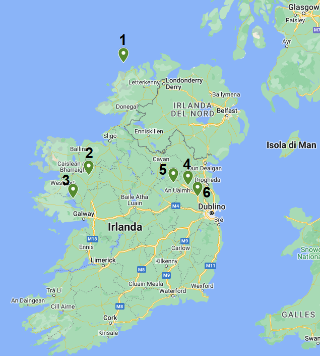

Mappa degli eventi
- Oilean Thoraigh (Isola di Tory): luogo in cui si trovava la roccaforte del potere dei Fomori, con a capo Balor. Oggigiorno, infatti, esiste un luogo chiamato Balor’s Fort (Roccaforte di Balor). Le scogliere dell’isola colano a picco sull’Atlantico al largo della costa del Donegal.
- Connacht: i Tuatha de Danaan appaiono per la prima volta nell’accampamento fortificato a Moyrein, nel Connacht occidentale, nascosti da una nube magica.
- Piana di Moytura, Cong: si trova nel sud della contea di Mayo ed è il luogo in cui è avvenuta la battaglia tra Firbolg e Tuatha de Danaan. Alla fine dello scontro si giunse a una conclusione ragionevole: i Firbolg avrebbero ottenuto il Connacht, mentre il resto dell’Irlanda sarebbe passata sotto la mano dei Danaan.
- Teltown (Teltin, dalla dea Telta): luogo della grande battaglia tra Danaan e Milesi. Qui i figli di Miled, ultimi invasori dell’isola di origine mitica, assumono la sovranità dell’Irlanda. Dopo la battaglia i Tuatha de Danaan non se ne andarono ma, grazie alle loro arti magiche, si avvolsero in un velo di invisibilità che potevano rimuovere e mettere a piacere. Da allora esistono due Irlanda: quella soprannaturale e quella terrena.
- Loughcrew Cairns: tumuli nel Westmeath in cui si ritene sia stato sepolto il grande re milese Ollav Fola . Egli diede al paese un codice legislativo e divise il territorio tra capi provinciali, che rispondevano a un re supremo insediato a Tara . Stabilire se sia appartenuto alla realtà più di altre figure di origine mitica è difficile.
- Tara: luogo principale del Ciclo delle Invasioni, in cui si trovava il re supremo d'Irlanda.
- Armagh (Emain Macha o Ard Macha): città fondata durante il regno di Kimbay, nel ciclo precedente, ma fondamentale per quello di Conor. Emain Macha si trova infatti nell’Ulster ed il suo nome significa La spilla di Macha , figlia del principe Red Hugh e regina. La città è sede di figure importanti come il re Conor Mac Nessa e dell’ordine cavalleresco il Ramo Rosso.
- Boyne: fiume sulle quali rive venne trovato il bambino Setanta. E’ anche il luogo del tumulo e palazzo fatato di Angus.
- Dùn Dealgan: zona assegnata in eredità a Setanta e sua successiva dimora e fortezza.
- Isola di Skye, Scozia: la Terra delle Ombre in cui viveva Skatha. In questa zona oggi si trovano le Cime di Cuchulain.
- Slievegallion: luogo in cui avviene il rapimento del Toro Bruno . Si sviluppa così l’importantissima Tain Bò Cualgné (La cattura del Toro Bruno), che ha termine nella piana di Aei.
- Killarney, Midlands: nel sud dell’Irlanda, zona in cui si svolge la maggior parte dell’azione del ciclo di Oisin e Finn.
- Knock (Castleknock): luogo della battaglia di Knock tra il Clan Bascna (di cui faceva parte il padre di Finn) ed il Clan Morna, che si contendevano il comando dei Fianna. Vittorioso uscì il clan Morna, di cui faceva parte Lia, signore di Luachar nel Connacht.
- Ben Bulban, contea di Sligo: luogo in cui, durante una battuta di caccia, Finn trovò il ragazzo che poi chiamò Oisin (cerbiatto).
- Glanismole: o Valle dei Tordi . Luogo in cui Oisin incontra gli uomini a cui chiede informazioni su Finn e i Fianna. Qui scende da cavallo e spezza l’incantesimo di Niamh.
- Gowra (Gabhra): luogo che oggi sopravvive nel nome di Garristown, nella contea di Dublino. Qui si ebbe la battaglia decisiva tra il Clan Bascna e Clan Morna. I Fianna vennero quasi completamente sterminati e Oscar fu ucciso.
- Laois: luogo da cui hanno origine i predoni che uccisero il padre di Maeldun.
- Doocloon: zona in cui venne bruciata una chiesa sopra la testa di Ailill, che venne ucciso.
- Narberth: sede del castello di Pwylle del tumulo di Arberth. Secondo la leggenda, a chiunque si fosse seduto su di esso sarebbe capitata un’avventura insolita: sarebbe stato percosso e ferito oppure avrebbe assisito a un prodigio.
- Harlech: sede della corte del re dell’Isola dei Forti, la Britannia, Bendigeid Vran, ossia Bran il Benedetto. Insieme a lui si trovavano suo fratello Manawyddan, figlio di Llyr, sua sorella Branwen e i due figli, Nissyen ed Evnissyen, che sua madre Penardun aveva dato a Eurosswyd.
- Aberrfraw: luogo in cui vennero celebrate le nozze tra Branwen e Mathlwch. Per il banchetto la compagnia si riunì sotto alcuni padiglioni, poiché nessuna casa avrebbe mai potuto contenere le gigantesche forme di Bran. Dopo allegri festeggiamenti, Branwen diventò la sposa del re d’Irlanda.
- Dunmore, contea di Galway: luogo in cui si svolge il racconto del suonatore di cornamusa e del suo incontro con il Pooka.
- Dublino: ambientazione dell’incontro tra Thomas Connolly e la Banshee. Viene citata la chiesa di Marlborough Street e il Dodderher.
- Castello di Carrigogunniel: nella contea di Limerick. Qui si svolse la grande festa del racconto L’uomo e il suo padrone.
- Limerick: in un villaggio qui vicino Owney e Owney-na-peak vivono un magico e pericoloso incontro con i gatti fatati di un cimitero in Owney e Owney-na-peak
- Connacht: in questa zona si tenne la festa per Seanchan, bardo che era appena stato fatto Ard-Filé.
- Lismore: area di residenza del ricco fattore Tom Bourke.
- Smerwick: sulla spiaggia Dick Fitzgerald incontra una Sirena nel racconto La signora di Gollerus.
- Columbkille: nella contea di Kilkenny. Luogo attraversato dal vecchio sovrano su un ponte di candida nebbia.
- Coloony: città di provenienza del prete Padre John Hart.
- Glencar: insieme ad altre zone della contea di Sligo, è una nota area di folletti, citata anche in Il bimbo rapito. Si dice che ci sia un tratto di rocce dove, se uno si addormenta, rischia di risvegliarsi privi di senno, perché i folletti gli hanno rubato l’anima.
- Sleamish Hill (Slieve Mish): monte nella contea di Antrim. Viene citato nella ballata La fonte fatata di Lagnanay, in cui il popolo fatato viene descritto come pericoloso e inaffidabile.
